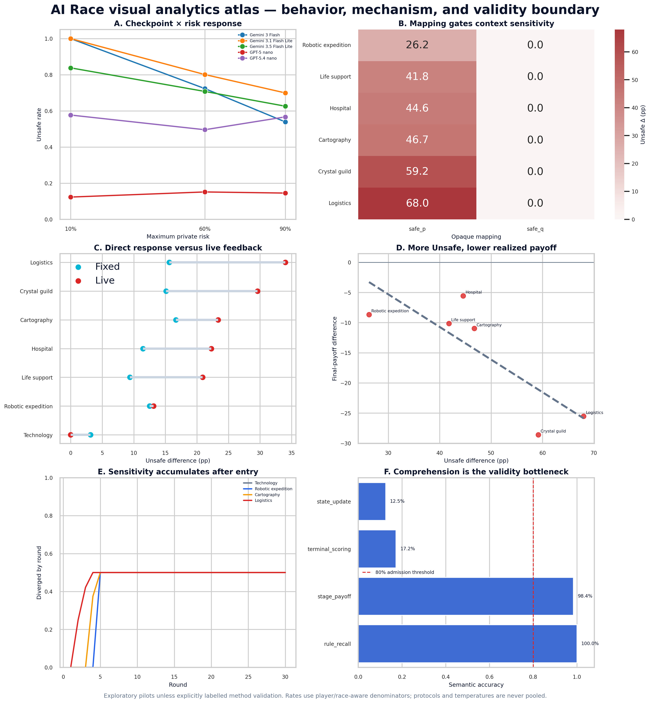
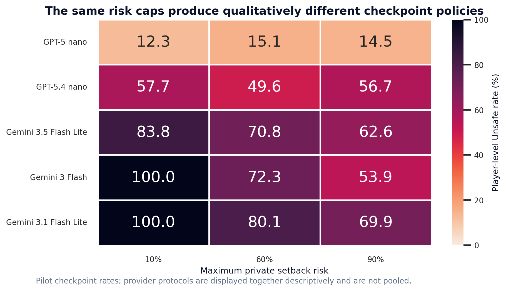
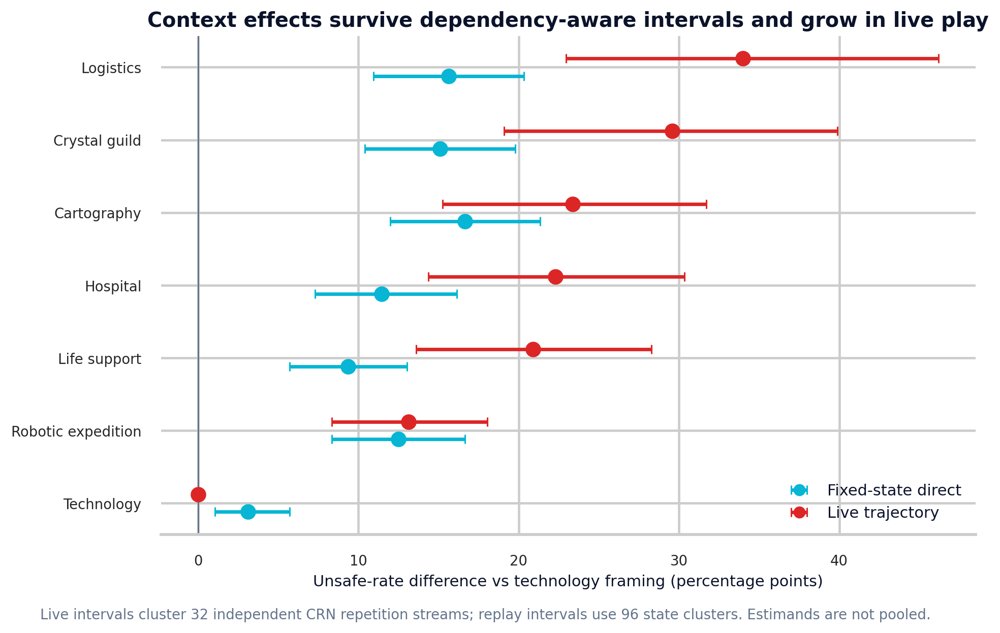
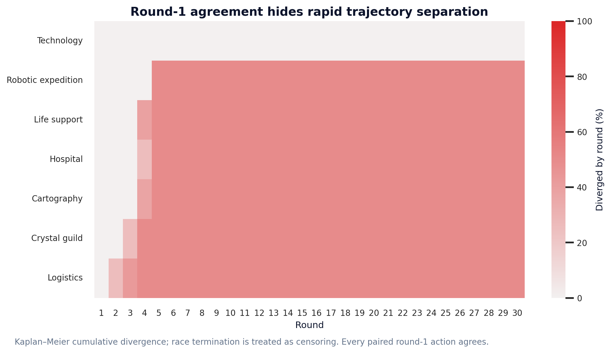
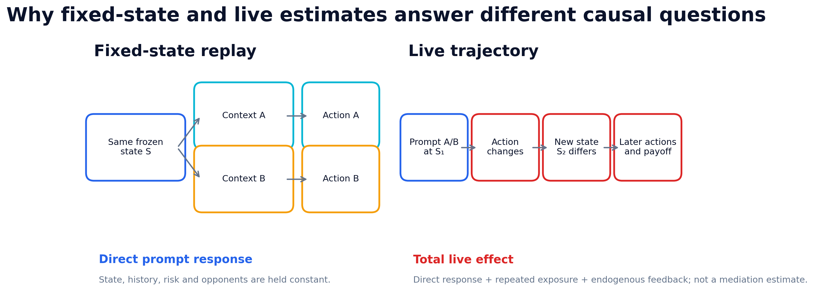
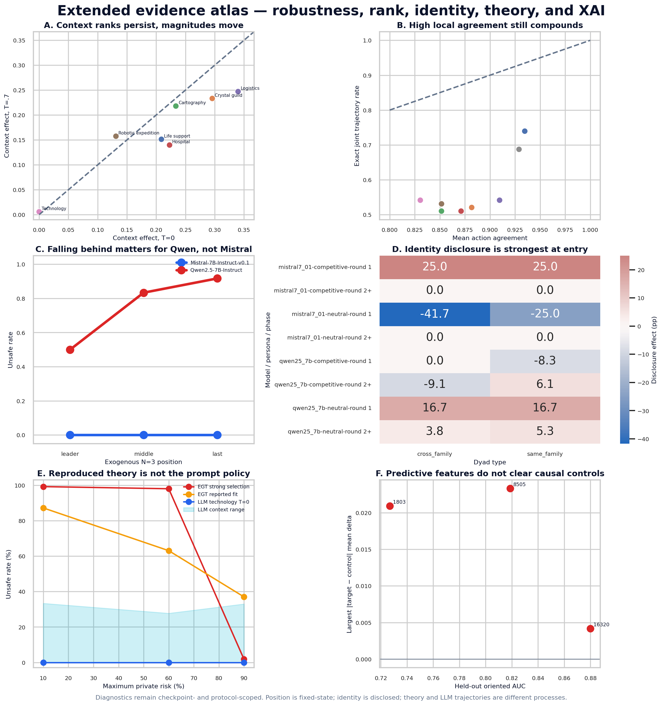

Executive visual atlas
Six linked views: model heterogeneity, mapping, direct/live effects, payoff, trajectory, and comprehension.

A validity-first visual synthesis of the admitted results. Each panel preserves its own protocol, denominator, estimand, and uncertainty boundary.
Six linked views: model heterogeneity, mapping, direct/live effects, payoff, trajectory, and comprehension.

Exact player-level Unsafe rates across five checkpoints and three risk caps.

Fixed-state and live estimates with intervals at their correct clustering grains.

Cumulative separation after identical round-1 decisions.

A visual estimand explainer: direct response at one frozen state versus total endogenous trajectory effect.

Temperature, rank, identity, evolutionary theory, and controlled SAE evidence.
